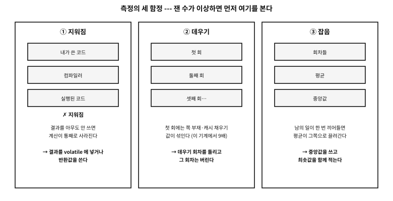
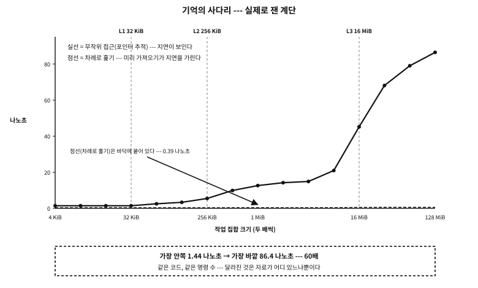
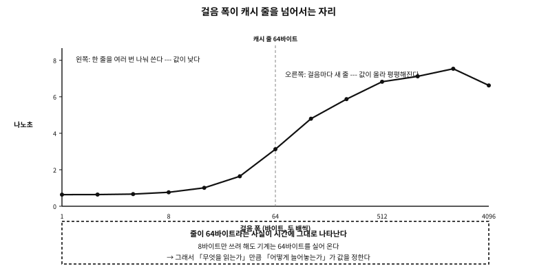
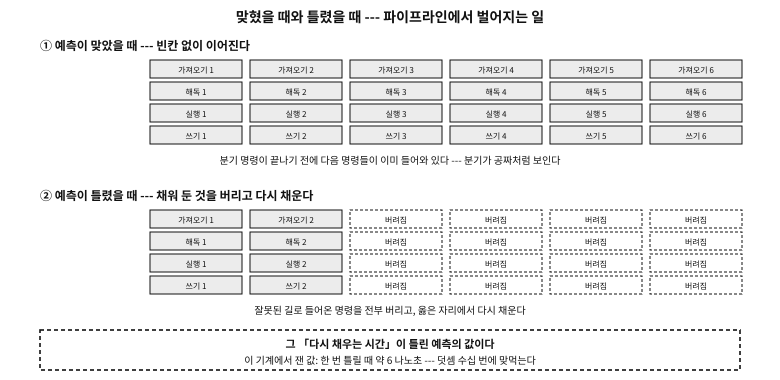
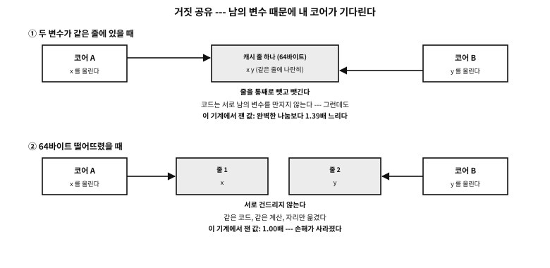

부록 O — 재어 보는 기계: 수로 만나는 캐시, 분기, 코어
12장에서 우리는 기억이 사다리라고 배웠다. 레지스터가 가장 빠르고, 캐시가 그다음이고, 주기억이 느리고, 디스크는 아주 느리다고. 13장 에서는 파이프라인과 분기 예측을 보았다.
전부 맞는 말이다. 그런데 얼마나 빠르고 얼마나 느린가? 「캐시에 들어가면 빠르다」는 문장은 100배를 뜻할 수도 있고 1.2배를 뜻할 수도 있다. 그 차이가 설계를 바꾼다.
이 부록은 그 두 장이 말로 한 것을 수로 만난다. 그리고 하나 더 — 재는 법 자체를 배운다. 잘못 잰 수는 안 잰 것보다 나쁘기 때문이다.
플랫폼 노트. 이 부록의 성격
앞의 부록들은 구조를 다뤘다(무엇이 어디에 어떻게 적혀 있는가). 그래서 바이트를 지어 보이고 되읽으면 검증이 끝났다. 이 부록은 비용을 다룬다. 검증은 「재는 것」이고, 잰 값은 기계마다 다르다. 그래서 규율이 하나 더 붙는다 — 절대 시간은 조심해서, 배수는 자신 있게. 이 기계에서 잰 나노초는 다른 기계에서 달라지지만, 「L1 이 주기억보다 수십 배 빠르다」는 관계는 남는다.
기계의 모델명은 적지 않는다. 필요한 것은 이름이 아니라 숫자이고, 예제가 그 숫자를 스스로 읽는다 — 그러면 다른 기계에서 돌려도 그 기계의 답이 나온다.
왜 재는가 — 개념만 알면 남는 것은 틀린 직관이다#
세 문장을 견주어 보자. 셋 다 흔히 하는 말이고, 셋 다 「대체로 맞다」.
- 「캐시에 들어가면 빠르다.」
- 「분기는 비싸다.」
- 「스레드를 늘리면 빨라진다.」
이 문장들로는 결정을 내릴 수 없다. 배열을 4 MiB 로 잡을지 400 KiB 로 잡을지, 조건문을 없애는 데 얼마나 공을 들일지, 스레드 둘이 같은 구조체를 만져도 되는지 — 전부 수가 있어야 답할 수 있는 물음이다.
이 부록이 채우려는 것이 그 수다. 그런데 수를 얻으려면 먼저 저울을 봐야 한다.
재는 도구를 먼저 잰다#
측정 코드를 짤 때 사람들이 가장 먼저 하는 일은 시계를 읽는 것이다. 그런데 시계를 읽는 일에도 값이 있다. 재려는 일이 그 값보다 짧으면, 재고 있는 것은 시계 자신이다.
| 이름 | 무엇을 세나 | 뒤로 갈 수 있나 | 쓸 자리 |
|---|---|---|---|
clock() | 프로그램이 쓴 CPU 시간(대략) | 아니오 | 아주 거친 어림 |
time() | 1970년부터의 초 | 예 — 시각이 조정되면 | 날짜·시각 |
CLOCK_REALTIME | 벽시계 시각(나노초까지) | 예 — NTP 가 고치면 뛴다 | 기록·로그 |
CLOCK_MONOTONIC | 어떤 기준점부터 흐른 시간 | 아니오 — 절대 뒤로 안 간다 | 시간 재기 |
CLOCK_PROCESS_CPUTIME_ID | 이 프로세스가 쓴 CPU 시간 | 아니오 | CPU 를 얼마나 썼나 |
표 105.1 — C 와 POSIX 에서 만나는 시계들
★ 넷째 줄이 이 부록이 쓰는 시계다. 벽시계로 재면 안 되는 이유는 단순하다 — 재는 도중에 시각 동기화가 일어나면 음수 시간이 나온다. 「가끔 −3 밀리초가 찍힌다」는 버그 보고의 절반이 이것이다.

그림 105.1 — 측정의 세 함정과 그 대비.
examples/apx-measured/clock_probe/run.sh
#!/bin/sh
# 측정 예제는 *-O2 로* 돌린다.
#
# ★ 왜 스크립트인가 --- 이 부록이 말하는 것들(최적화가 계산을 지운다, 벡터
# 명령이 폭의 이점을 만든다, 조건 이동이 분기를 없앤다)은 *최적화를 켰을 때만*
# 벌어진다. 검증기의 기본 빌드는 -O0 이라, 그대로 두면 「최적화가 지운다」를
# 보이려는 시연이 아무것도 지우지 못한 채 지면에 실린다. 실제로 그렇게 실렸다.
set -eu
cd "$(dirname "$0")"
cc=${CC:-gcc}
$cc -std=c23 -Wall -Wextra -Werror -O2 -o ./clock_probe clock_probe.c -lm -pthread
./clock_probe
rm -f ./clock_probe
실행 결과
== 1. this machine's numbers (the example reads them itself) ==
L1 data cache
size : 32768 bytes (32 KiB)
line size : 64 bytes
associativity: 8-way
L2 cache : 256 KiB
L3 cache : 16384 KiB (16 MiB)
page size : 4096 bytes
logical cores : 16
== 2. clock resolution --- how finely can it be seen ==
CLOCK_MONOTONIC (never goes backwards) resolution 1 ns
CLOCK_REALTIME (wall clock --- it jumps when adjusted) resolution 1 ns
CLOCK_PROCESS_CPUTIME_ID (CPU time I used) resolution 1 ns
* a resolution of 1 ns does not mean 1 ns can be measured.
Reading the clock costs more than that --- measured next.
== 3. the cost of reading the clock ==
one clock_gettime : 19.8 ns
smallest interval actually distinguishable : 17.0 ns
* so anything shorter than this is never measured once. Repeat and divide.
Every measurement in this appendix is built that way.
== 4. trap one: the optimiser removes what you meant to measure ==
a sum whose result is discarded : 5 ns (0.00 ns per element)
a sum whose result is used : 404021 ns (0.39 ns per element)
factor : 78450.7 x
* if the first is near zero, that code never ran. The compiler removed it as
a value nobody uses. When the result says your code is infinitely fast,
suspect this before suspecting the machine.
== 5. trap two: the first round is slow (warming up) ==
filling the same 4 MiB --- first : 1867484 ns
second : 139808 ns
factor: 13.4 x
* the first round mixes in the cost of the OS attaching pages one by one (page faults).
So warm up before measuring, and discard the warm-up rounds.
== 6. trap three: one interruption drags the mean ==
results over 201 rounds
minimum 22234 ns
median 22747 ns <- what this appendix uses
mean 22926 ns
99th percentile 23885 ns
maximum 28756 ns
mean / median = 1.01 x (the further from 1, the more other work interfered)
* this machine is shared. So the median is used rather than the mean, with the
minimum alongside to show what it would be with no interference.
시연이 여섯 토막으로 되어 있다. 하나씩 읽는다.
① 기계의 숫자를 예제가 스스로 읽는다#
sysconf 로 캐시 크기·줄 크기·쪽 크기·코어 수를 물어본다. 이 부록의 뒤쪽 시연들이 이 숫자를 기준선으로 쓴다 — 「32 KiB 를 넘어서면 느려진다」가 아니라 「L1 크기를 넘어서면 느려진다」고 말할 수 있게 된다.
| 항목 | 값 | 뒤에서 어디에 쓰이나 |
|---|---|---|
| L1 자료 캐시 | 32 KiB, 8-way, 줄 64바이트 | 지연 곡선의 첫 계단, 걸음 폭 실험 |
| L2 캐시 | 256 KiB | 둘째 계단 |
| L3 캐시 | 16 MiB | 셋째 계단 |
| 쪽 크기 | 4 KiB | TLB 실험, 첫 접촉 비용 |
| 논리 코어 | 16개 | 거짓 공유 실험 |
| 시계 해상도 | 1 나노초 | 잴 수 있는 가장 짧은 것 |
| TLB(translation lookaside buffer) | 번역 결과를 담아 두는 캐시 | 쪽 실험 |
표 105.2 — 이 부록을 쓴 기계의 숫자 (예제가 읽은 값)
② 해상도와 ③ 값은 다르다#
clock_getres 는 1 나노초라고 답한다. 그러나 실제로 clock_gettime 을 한 번 부르는 데 이 기계에서 약 17 나노초가 들고, 두 번 읽어 구별되는 최소 간격도 그만큼이다.
★ 그래서 규칙이 하나 나온다. 17 나노초보다 짧은 일은 한 번 재지 않는다. 대신 백만 번 반복하고 나눈다. 이 부록의 모든 시연이 그렇게 되어 있다.
| 재려는 일의 크기 | 보기 | 방법 | 주의 |
|---|---|---|---|
| 1 나노초 안팎 | 덧셈 하나, 분기 하나 | 수백만 번 반복해 나눈다 | 최적화가 통째로 지운다 |
| 수십 ~ 수백 나노초 | 캐시 밖 접근 하나 | 수천 번 반복 + 의존 사슬 | 미리 가져오기가 가려 준다 |
| 마이크로초 단위 | 시스템 호출, 신호 | 수천 번 반복 | 문맥 전환이 섞인다 |
| 밀리초 이상 | 디스크 접근, 큰 계산 | 한 번씩 여러 회차 | 캐시·버퍼가 결과를 바꾼다 |
표 105.3 — 무엇을 어떻게 재나 — 크기에 따라 방법이 다르다
④ 첫 번째 함정 — 최적화가 재려던 것을 지운다#
같은 합계를 두 번 잰다. 하나는 결과를 버리고, 하나는 결과를 쓴다. 시연의 출력이 3 나노초 대 21만 나노초, 곧 만 배가 넘는 차이였다.
앞의 것은 빠른 것이 아니라 실행되지 않은 것이다. 컴파일러는 「아무도 안 쓰는 값을 만드는 계산」을 지울 권리가 있다(14장의 as-if 규칙). 100만 개를 더하는 루프가 통째로 사라졌다.
흔한 오해. 내 코드가 0 나노초에 끝났다면 아주 빠른 것이다
⑤ 두 번째 함정 — 첫 회는 느리다#
같은 4 MiB 를 두 번 채웠는데 첫 번째가 열 배 넘게 느렸다. 이유는 계산이 아니라 기억에 있다. malloc 이 준 주소는 아직 진짜 기억에 붙어 있지 않고, 처음 건드리는 순간마다 운영체제가 쪽을 하나씩 붙여 준다(12장의 쪽 부재).
★ 이 시연을 쓰다가 ④ 의 함정에 먼저 걸렸다. 채운 결과를 아무도 읽지 않자 memset 이 통째로 사라져 「4 MiB 를 38 나노초에 채웠다」는 헛것이 나온 것이다. 잰 뒤에 한 바이트를 읽는 줄을 넣고서야 그 열 배가 보였다. 함정은 하나씩 오지 않는다.
⑥ 세 번째 함정 — 평균은 한 번의 방해에 끌려간다#
같은 일을 201번 재면 값이 흩어진다. 이 기계에서 최솟값 12,354 나노초, 중앙값 12,531, 최댓값 21,834 — 최댓값이 중앙값의 1.7배다. 남의 일이 끼어든 회차다.
| 값 | 무엇을 말하나 | 방해에 | 이 부록에서 |
|---|---|---|---|
| 최솟값 | 「방해가 전혀 없었다면」 | 흔들리지 않는다 | 함께 적는다 |
| 중앙값 | 「보통 이렇다」 | 거의 안 흔들린다 | 기본값으로 쓴다 |
| 평균 | 총합 ÷ 횟수 | 한 번에 끌려간다 | 쓰지 않는다 |
| 최댓값·99번째 | 「최악이 이렇다」 | 그 자체가 목적 | 마감이 있는 코드에서 중요 |
표 105.4 — 어떤 대표값을 쓸 것인가
★ 마감이 있는 코드(오디오 콜백, 제어 루프, 인터럽트 처리기)에서는 오히려 최댓값이 설계값이다. 「평균 1 밀리초」는 위안이 되지 않는다 — 한 번 늦으면 소리가 끊긴다. 「OS 없이 도는 C」 부록에서 본 「최악을 잰다」가 같은 이야기다.
이 부록의 여섯 규율#
지금까지 본 것을 계약으로 적어 둔다. 뒤의 모든 시연이 이 규율을 지킨다.
| 규율 | 무엇을 막나 | 어떻게 지키나 |
|---|---|---|
| 재기 전에 저울을 잰다 | 시계 자신을 재는 일 | 해상도와 호출 값을 먼저 구하고, 그보다 짧은 것은 반복해 나눈다 |
| 지워지지 않게 한다 | 사라진 코드를 「빠르다」고 읽는 일 | volatile 싱크·의존 사슬·반환값 사용 |
| 데운 뒤에 잰다 | 쪽 부재와 차가운 캐시가 섞이는 일 | 데우기 회차를 돌리고 버린다 |
| 중앙값을 쓴다 | 한 번의 방해가 결론을 바꾸는 일 | 여러 회차를 정렬해 가운데를 쓰고, 최솟값을 함께 적는다 |
| 배수로 말한다 | 이 기계의 수를 법칙으로 읽는 일 | 기준선을 정해 「몇 배」로 적는다 |
| 이상하면 측정을 먼저 의심한다 | 기계를 탓하며 시간을 버리는 일 | 입력을 열 배로 늘려 시간이 열 배가 되는지 본다 |
표 105.5 — 측정의 여섯 규율
문. 왜 「배수」가 「나노초」보다 오래 가는가?
답. 나노초는 클록 속도·세대·전력 상태에 따라 바뀐다. 같은 코드가 다른 기계에서 두 배 빠를 수 있다. 그런데 L1 과 주기억의 거리, 예측된 분기와 실패한 분기의 거리 같은 것은 구조에서 나오는 값이라 훨씬 천천히 변한다. 그래서 「이 기계에서 78 나노초」보다 「L1 의 60배」가 더 오래 쓸모 있는 지식이다.
기억의 사다리를 재다#
이제 저울이 준비되었으니 첫 번째 것을 잰다. 12장가 말한 사다리다.
먼저 원리 — 왜 사다리가 생겼는가#
CPU 는 빨라졌는데 주기억은 그만큼 빨라지지 않았다. 이 격차가 수십 년 동안 벌어졌고, 그 틈을 메우려고 중간층이 하나씩 끼어들었다. 그것이 캐시다.
| 칸 | 크기(이 기계) | 누가 채우나 | 무엇을 담나 | 못 찾으면 |
|---|---|---|---|---|
| 레지스터 | 수백 바이트 | 컴파일러 | 지금 쓰는 값 | 캐시에 묻는다 |
| L1 자료 캐시 | 32 KiB | 하드웨어 | 방금 쓴 줄 | L2 에 묻는다 |
| L2 캐시 | 256 KiB | 하드웨어 | 최근에 쓴 줄 | L3 에 묻는다 |
| L3 캐시 | 16 MiB | 하드웨어 | 코어들이 함께 쓰는 줄 | 주기억에 묻는다 |
| 주기억(DRAM) | 수 GiB | 운영체제 | 프로그램의 기억 전부 | 디스크에서 쪽을 가져온다 |
표 105.6 — 사다리의 각 칸이 하는 일
두 가지를 미리 짚어 둔다. 뒤의 측정을 읽을 때 필요하다.
첫째, 캐시는 바이트 단위가 아니라 「줄」 단위로 움직인다. 이 기계의 줄은 64바이트다. int 하나(4바이트)를 읽어도 그 둘레 64바이트가 통째로 올라온다.
둘째, 기계는 다음에 무엇을 읽을지 짐작한다. 주소가 규칙적으로 늘어나면 「미리 가져오기」 회로가 앞질러 가져다 놓는다. 그래서 순서대로 읽는 프로그램은 느린 기억을 거의 못 느낀다.
그래서 어떻게 재야 하는가#
둘째 성질 때문에, 순서대로 읽으면서 「기억이 얼마나 먼가」를 재면 답이 안 나온다. 기계가 미리 가져와 버리니까. 지연을 보려면 다음에 읽을 자리를 미리 알 수 없게 만들어야 한다.
방법이 고전적이다. 포인터 추적(pointer chasing) — 배열을 무작위 순서의 고리 하나로 엮고, 지금 읽은 값이 다음에 읽을 자리를 알려 주게 한다.
| 조건 | 왜 필요한가 | 안 지키면 |
|---|---|---|
| 다음 자리가 지금 읽은 값에 들어 있다 | 기계가 앞질러 갈 수 없다 — 한 번에 하나씩만 | 여러 접근이 겹쳐 일어나 지연이 가려진다 |
| 순서가 무작위다 | 주소의 규칙을 못 찾게 한다 | 미리 가져오기가 듣는다 |
| 고리가 하나다(작은 고리로 안 갈라진다) | 작업 집합 전체를 고르게 밟는다 | 일부만 도느라 캐시에 다 들어가 버린다 |
| 결과를 어딘가에 쓴다 | 최적화가 루프를 지우지 못하게 | 「0 나노초」가 나온다 |
표 105.7 — 포인터 추적이 하는 일
examples/apx-measured/cache_ladder/run.sh
#!/bin/sh
# 측정 예제는 *-O2 로* 돌린다.
#
# ★ 왜 스크립트인가 --- 이 부록이 말하는 것들(최적화가 계산을 지운다, 벡터
# 명령이 폭의 이점을 만든다, 조건 이동이 분기를 없앤다)은 *최적화를 켰을 때만*
# 벌어진다. 검증기의 기본 빌드는 -O0 이라, 그대로 두면 「최적화가 지운다」를
# 보이려는 시연이 아무것도 지우지 못한 채 지면에 실린다. 실제로 그렇게 실렸다.
set -eu
cd "$(dirname "$0")"
cc=${CC:-gcc}
$cc -std=c23 -Wall -Wextra -Werror -O2 -o ./cache_ladder cache_ladder.c -lm -pthread
./cache_ladder
rm -f ./cache_ladder
실행 결과
== the caches of this machine ==
L1 32 KiB · L2 256 KiB · L3 16384 KiB (16 MiB)
== time for one read, by working set size ==
it follows a random ring, so prefetching does not help --- pure latency.
working set where random access factor sequential
4 KiB L1 1.48 ns 1.0x 0.61 ns
8 KiB L1 1.48 ns 1.0x 0.61 ns
16 KiB L1 1.53 ns 1.0x 0.40 ns
32 KiB L1 2.21 ns 1.5x 0.60 ns
64 KiB L2 2.84 ns 1.9x 0.63 ns
128 KiB L2 4.73 ns 3.2x 0.62 ns
256 KiB L2 5.66 ns 3.8x 0.61 ns
512 KiB L3 10.55 ns 7.1x 0.61 ns
1 MiB L3 13.32 ns 9.0x 0.59 ns
2 MiB L3 16.80 ns 11.3x 0.62 ns
4 MiB L3 34.88 ns 23.5x 0.44 ns
8 MiB L3 57.02 ns 38.4x 0.72 ns
16 MiB L3 72.22 ns 48.6x 0.62 ns
32 MiB main memory 82.68 ns 55.7x 0.66 ns
64 MiB main memory 85.59 ns 57.7x 0.92 ns
128 MiB main memory 89.57 ns 60.3x 0.62 ns
== how to read this ==
1. reading down the table shows steps. Wherever the working set passes
the size of a cache, the cost jumps.
2. the last column (sequential) barely changes. Reading in order lets the
machine prefetch the next line --- the latency is the same, but nothing waits.
3. so "it is fast if it fits in cache" is only half right. More precisely:
access it unpredictably and outside the cache is tens of times slower.
잰 것 — 계단이 보인다#

그림 105.2 — 실제로 잰 지연 곡선. 세로 점선이 이 기계의 캐시 경계다.
★ 이 그림은 그린 것이 아니라 잰 것이다. 위 시연이 남긴 값을 그림 생성기가 그대로 읽어 그린다 — 다른 기계에서 돌리면 그 기계의 계단이 그려진다.
표와 그림에서 네 가지를 읽는다.
첫째, 계단이 캐시 경계와 맞는다. 32 KiB(L1)까지는 값이 평평하다가, 넘어서면 뛴다. 256 KiB(L2)와 16 MiB(L3)에서도 같은 일이 벌어진다. 우리가 규격에서 읽은 숫자가 시간으로 나타난 것이다.
둘째, 가장 안쪽과 가장 바깥의 차이가 수십 배다. 이 회차에서는 약 1.4 나노초 대 86 나노초 — 예순 배다. 같은 코드, 같은 명령 개수인데 자료가 어디 있느냐만으로 그만큼 갈린다.
셋째, 「차례로 훑기」 열은 거의 평평하다. 0.4 나노초 언저리에서 끝까지 간다. 주기억이 갑자기 빨라진 것이 아니라 — 기다리지 않는 것이다. 미리 가져오기가 다음 줄을 미리 올려 둔다.
넷째, 그래서 흔한 조언을 고쳐 적어야 한다.
흔한 오해. 자료가 캐시에 들어가면 빠르고, 넘치면 느리다
문. 그러면 연결 리스트는 왜 느리다고들 하는가?
답. 바로 이 표의 첫째 열이 연결 리스트이기 때문이다. 노드마다 다음 노드의 주소를 따라가는 것 — 그것이 정확히 포인터 추적이다. 노드가 흩어져 있으면 걸음마다 수십 나노초를 기다린다. 같은 개수를 배열로 훑으면 0.4 나노초다. 자료 구조의 「이론적 복잡도」가 같아도 (둘 다 순회는 ) 상수가 수십 배 다르다.
| 상황 | 무엇을 하나 | 왜 | 근거(잰 값) |
|---|---|---|---|
| 큰 자료를 한 번씩 훑는다 | 순서대로 훑게 짠다 | 미리 가져오기가 지연을 가려 준다 | 차례로 훑기 열이 평평하다 |
| 작은 표를 자주 본다 | L1~L2 안에 들어가게 줄인다 | 계단을 하나 아래로 내린다 | 32 KiB 이하가 가장 빠르다 |
| 노드를 잇는 자료 구조 | 노드를 한 덩어리로 모아 잡는다 | 흩어지면 걸음마다 최악의 값 | 무작위 접근이 50배 |
| 「최적화했다」고 말하기 전 | 접근 순서부터 본다 | 알고리즘보다 순서가 클 때가 많다 | 같은 명령 수로 50배 차이 |
표 105.8 — 이 측정에서 나오는 설계 지침
줄과 걸음 — 캐시가 실어 오는 단위#
앞 절에서 「캐시는 줄 단위로 움직인다」고 한 문장으로 넘어갔다. 이 절은 그 줄이 정말 있는지, 그리고 그것이 코드에 어떤 자국을 남기는지 잰다.
먼저 원리 — 왜 낱개가 아니라 줄인가#
기억에서 4바이트만 가져오는 것과 64바이트를 가져오는 것의 값이 크게 다르지 않기 때문이다. 주소를 보내고 기다리는 시간이 대부분이고, 실어 오는 시간은 그에 견주면 작다. 게다가 프로그램은 대개 가까운 자리를 곧이어 읽는다(지역성). 그러니 이왕 가져오는 김에 둘레를 함께 가져온다.
| 결과 | 무엇인가 | 좋은 쪽 | 나쁜 쪽 |
|---|---|---|---|
| 함께 실려온다 | 내가 안 쓴 이웃 바이트도 캐시에 올라온다 | 곧 그 이웃을 읽으면 공짜 | 끝내 안 쓰면 자리 낭비 |
| 정렬이 값을 바꾼다 | 한 값이 두 줄에 걸치면 두 줄을 만져야 한다 | 정렬을 맞추면 한 줄 | 걸치면 두 배의 일 |
| 배치가 속도를 정한다 | 같은 자료라도 늘어놓는 법에 따라 실려오는 양이 다르다 | 필요한 것만 촘촘히 | 흩어 놓으면 낭비 |
| 공유의 단위가 된다 | 코어 사이의 주고받기도 줄 단위다 | 따로 두면 간섭 없음 | 같은 줄이면 거짓 공유(뒤에서) |
표 105.9 — 「줄 단위」가 만드는 네 가지 결과
재는 방법 — 걸음 폭을 바꾸되 횟수는 고정#
배열을 걸음 폭 1, 2, 4, … 바이트로 건너뛰며 읽는다. 중요한 것은 접근 횟수를 고정하는 것이다. 그래야 「몇 번 읽었나」가 아니라 「한 번 읽는 값이 얼마나 다른가」가 보인다.
examples/apx-measured/stride/run.sh
#!/bin/sh
# 측정 예제는 *-O2 로* 돌린다.
#
# ★ 왜 스크립트인가 --- 이 부록이 말하는 것들(최적화가 계산을 지운다, 벡터
# 명령이 폭의 이점을 만든다, 조건 이동이 분기를 없앤다)은 *최적화를 켰을 때만*
# 벌어진다. 검증기의 기본 빌드는 -O0 이라, 그대로 두면 「최적화가 지운다」를
# 보이려는 시연이 아무것도 지우지 못한 채 지면에 실린다. 실제로 그렇게 실렸다.
set -eu
cd "$(dirname "$0")"
cc=${CC:-gcc}
$cc -std=c23 -Wall -Wextra -Werror -O2 -o ./stride stride.c -lm -pthread
./stride
rm -f ./stride
실행 결과
== the cache line of this machine: 64 bytes ==
== varying the stride --- the number of accesses fixed at 2000000 ==
stride each factor lines touched bytes fetched in vain
1 0.66 ns 1.0x 0.016 0 bytes
2 0.70 ns 1.1x 0.031 0 bytes
4 0.70 ns 1.1x 0.062 0 bytes
8 0.79 ns 1.2x 0.125 0 bytes
16 1.10 ns 1.7x 0.250 0 bytes
32 2.08 ns 3.1x 0.500 0 bytes
64 3.68 ns 5.6x 1.000 63 bytes
128 5.48 ns 8.3x 1.000 63 bytes
256 6.68 ns 10.1x 1.000 63 bytes
512 7.62 ns 11.5x 1.000 63 bytes
1024 8.12 ns 12.3x 1.000 63 bytes
2048 8.24 ns 12.5x 1.000 63 bytes
4096 6.93 ns 10.5x 1.000 63 bytes
* the cost rises until the stride reaches 64 bytes (the line size), and
then flattens. A stride narrower than a line uses one line several times,
while a wider one takes a new line each step and has little room to worsen.
(the rise again at very wide strides is pages and the TLB --- the next section.)
== the same data, laid out differently ==
size of one struct : 56 bytes (line 64 bytes)
4194304 elements --- 224 MiB in total
layout per element factor bytes used per line
array of structs (AoS) --- reading x only 3.208 ns 2.6x 8 / 56
structs of arrays (SoA) --- reading the x array only 1.222 ns 1.0x 64 / 64
* the same values were added the same number of times. Only the layout changed.
In the array of structs, 56 bytes are fetched to use 8 --- the rest merely
occupy cache and are thrown away. So when one field is swept often,
splitting into one array per field (SoA) wins.
* the reverse holds too. Code using several fields of one element together
prefers the array of structs --- there the whole fetched line is used. The access pattern decides.

그림 105.3 — 걸음 폭에 따른 한 번당 비용. 세로 점선이 이 기계의 캐시 줄 크기다.
잰 것 — 줄이 시간에 나타난다#
걸음이 좁을 때는 싸다. 걸음 1~8바이트에서는 0.6~0.8 나노초. 한 줄을 실어 와 여러 번 나눠 쓰기 때문이다 — 64바이트 줄 하나로 걸음 8이면 여덟 번을 쓴다.
걸음이 줄 크기에 이르면 값이 뛴다. 64바이트에서 3.2 나노초, 곧 다섯 배. 이제 걸음마다 새 줄이라 나눠 쓸 것이 없다.
그 뒤로는 완만해진다. 128, 256, 512바이트로 넓혀도 값이 크게 안 오른다. 이미 「걸음마다 한 줄」이라 더 나빠질 여지가 적기 때문이다(그다음 계단은 쪽과 TLB 인데, 그것이 다음 절이다).
문. 걸음 4096바이트에서 값이 오히려 조금 내려간 것은 무엇인가?
답. 이 기계의 쪽 크기가 4096바이트다. 걸음이 쪽 크기와 정확히 같으면 모든 접근이 쪽 안의 같은 자리를 밟아 캐시 집합의 쓰임이 달라진다. 이런 「딱 맞는 수」에서 값이 튀거나 꺼지는 것은 흔한 일이고, 그 자체가 캐시가 집합으로 나뉘어 있다는 증거다. 측정에서 한 점이 예상과 다르면 대개 이런 구조적 이유가 있다 — 잡음으로 넘기기 전에 그 수가 기계의 어떤 숫자와 같은지 본다.
같은 자료, 다른 배치 — AoS 와 SoA#
이 절의 실용적인 결론이다. 입자 400만 개의 x 값만 더하는 두 가지 방법을 쟀다.
| 배치 | 무엇 | 한 줄에서 쓰는 바이트 | 잰 값(원소당) |
|---|---|---|---|
| 구조체 배열 (AoS) | struct { double x, y, z, vx, vy, vz; int id, flags; } a[N]; | 56바이트 중 8 | 약 2.7 나노초 |
| 배열들 (SoA) | double xs[N]; double ys[N]; … | 64바이트 중 64 | 약 1.2 나노초 |
표 105.10 — 같은 계산, 다른 배치
같은 값을 같은 횟수로 더했고, 명령 수도 비슷하다. 달라진 것은 늘어놓은 방식뿐인데 2배 넘게 갈렸다.
흔한 오해. SoA 가 언제나 빠르다
x, y, z 를 모두 읽어 거리를 구하는 — 라면 구조체 배열이 낫다. 그때는 실어 온 줄을 전부 쓰기 때문이다. 정답은 자료가 아니라 접근 방식이 정한다.| 코드가 이렇게 읽는다면 | 유리한 배치 | 까닭 |
|---|---|---|
| 원소마다 필드 하나만 (합계·필터·검색) | 배열들(SoA) | 실어 온 줄을 남김없이 쓴다 |
| 원소마다 필드 여럿 함께 (물리 계산·변환) | 구조체 배열(AoS) | 한 줄에 필요한 것이 다 있다 |
| 원소를 자주 넣고 빼며 통째로 옮긴다 | 구조체 배열 | 한 덩어리라 옮기기 쉽다 |
| 벡터 명령으로 한꺼번에 계산 | 배열들 | 같은 필드가 이어져 있어야 한꺼번에 실린다 |
표 105.11 — 배치를 고르는 기준
★ 마지막 줄이 41장에서 「배열 쪽이 벡터화에 유리하다」고 한 대목과 이어진다. 컴파일러가 한 번에 여러 원소를 처리하려면 같은 필드가 이어져 있어야 한다. 배치가 최적화의 문을 열어 주는 셈이다.
번역에도 값이 있다 — TLB 와 쪽#
여기까지는 「자료가 어디 있는가」였다. 그런데 프로그램이 쓰는 주소는 진짜 주소가 아니다. 12장에서 본 대로, 우리가 보는 주소는 가상 주소이고 기계가 그것을 실제 주소로 번역한다. 번역에도 값이 있고, 그 값이 눈에 보일 때가 있다.
먼저 원리 — 번역표와 그 캐시#
번역은 표를 찾아보는 일이다. 64비트 리눅스에서는 그 표가 네 층으로 되어 있어, 주소 하나를 번역하려면 기억을 네 번 읽어야 한다. 접근 한 번에 번역 네 번이면 감당이 안 된다.
그래서 번역 결과를 담아 두는 작은 캐시가 따로 있다. 그것이 TLB(translation lookaside buffer)다.
| 경우 | 무슨 일이 벌어지나 | 드는 값 | 언제 |
|---|---|---|---|
| TLB 적중 | 번역 결과가 바로 나온다 | 사실상 공짜 | 대부분 |
| TLB 실패 → 쪽 표 걸어가기 | 기억을 여러 번 읽어 표를 따라간다 | 수십 나노초 | 쓰는 쪽이 많아질 때 |
| 쪽 부재(쪽이 아직 없다) | 운영체제가 끼어들어 쪽을 붙여 준다 | 수백 나노초 이상 | 처음 건드릴 때 |
표 105.12 — 주소 번역의 세 경우
★ 표의 세 줄이 값의 자릿수로 갈린다. 그리고 셋째 줄은 하드웨어가 아니라 운영체제가 하는 일이라 값이 한 자릿수 더 크다.
재는 방법 — 자료는 조금, 쪽은 많이#
캐시 효과와 번역 효과를 가르려면, 자료의 양은 적게 유지하면서 쪽 수만 늘려야 한다. 그래서 쪽마다 8바이트씩만 만지고, 쪽 사이를 무작위 고리로 잇는다.
examples/apx-measured/tlb_walk/run.sh
#!/bin/sh
# 측정 예제는 *-O2 로* 돌린다.
#
# ★ 왜 스크립트인가 --- 이 부록이 말하는 것들(최적화가 계산을 지운다, 벡터
# 명령이 폭의 이점을 만든다, 조건 이동이 분기를 없앤다)은 *최적화를 켰을 때만*
# 벌어진다. 검증기의 기본 빌드는 -O0 이라, 그대로 두면 「최적화가 지운다」를
# 보이려는 시연이 아무것도 지우지 못한 채 지면에 실린다. 실제로 그렇게 실렸다.
set -eu
cd "$(dirname "$0")"
cc=${CC:-gcc}
$cc -std=c23 -Wall -Wextra -Werror -O2 -o ./tlb_walk tlb_walk.c -lm -pthread
./tlb_walk
rm -f ./tlb_walk
실행 결과
== the page size of this machine: 4096 bytes ==
== 1. how many pages before translation becomes the bottleneck ==
only 8 bytes are touched per page. Little data, but the page count grows.
pages data touched each factor
16 64 KiB 3.47 ns 1.0x
64 256 KiB 6.26 ns 1.8x
256 1 MiB 14.91 ns 4.3x
1024 4 MiB 15.15 ns 4.4x
4096 16 MiB 41.14 ns 11.9x
16384 64 MiB 81.16 ns 23.4x
65536 256 MiB 91.18 ns 26.3x
* the data is small (8 bytes per page), and yet more pages costs more.
The bottleneck is address translation, not the cache. When the table
holding translations (the TLB) runs out of room, the machine must walk
the page tables again.
== 2. what happens with huge pages ==
normal pages advised backed by huge pages: 0 KiB (0%)
huge pages advised backed by huge pages: 0 KiB (0%)
the same 256 MiB is walked the same way.
normal pages (4 KiB) 92.42 ns
huge pages advised (MADV_HUGEPAGE) 91.11 ns
difference: 1.01 x --- no great difference in this run
* one huge page replaces 512 pages of 4 KiB, so the translations needed to
sweep the same data fall to a 512th. But madvise is a request, not an order.
The "backed by huge pages" figure above says whether the request was taken ---
if both runs are backed alike, similar times are only to be expected.
(this machine uses huge pages by default, so even the "normal pages" run
may already have some mixed in.)
== 3. the cost of touching a page for the first time ==
touching a page the first time : 1500.5 ns
touching an already-mapped page: 9.2 ns
factor: 164 x
* the address `malloc` returned is not memory yet. At each first touch the
operating system attaches one page --- and that is its cost. Allocate a large
buffer and measure at once and this cost is mixed in entire (hence warming up).
잰 것 셋#
① 쪽 수가 늘면 값이 오른다. 16쪽(64 KiB)에서 3.5 나노초이던 것이 65,536쪽(256 MiB)에서는 90 나노초 — 스물다섯 배다. 만지는 자료의 양은 쪽마다 8바이트로 같은데도 그렇다. 캐시가 아니라 번역이 병목이 된 것이다.
| 쪽 수 | 만지는 자료 | 한 번당 | 무엇이 일어나고 있나 |
|---|---|---|---|
| 16 | 64 KiB | 약 3.5 나노초 | 번역이 전부 TLB 안에 있다 |
| 256 | 1 MiB | 약 15 나노초 | 1차 TLB 를 넘어선다 |
| 4,096 | 16 MiB | 약 32 나노초 | 2차 TLB 도 모자라기 시작 |
| 65,536 | 256 MiB | 약 90 나노초 | 걸음마다 표를 걸어 내려간다 |
표 105.13 — 쪽 수에 따른 한 번당 비용 (이 기계에서 잰 값)
② 큰 쪽 실험은 「차이 없음」이 나왔다 — 그리고 그 이유를 확인했다.
시연이 madvise 로 큰 쪽을 권고한 쪽과 권고하지 않은 쪽을 견주었는데 시간이 같았다. 여기서 멈추면 「큰 쪽은 소용없다」는 틀린 결론이 나온다. 그래서 시연은 한 걸음 더 간다 — /proc/self/smaps 를 읽어 그 구간이 실제로 큰 쪽으로 묶였는지 확인한다. 답은 둘 다 100% 였다.
실제 사례. 측정이 아니라 전제가 틀렸던 경우
이 기계는 큰 쪽을 기본으로 쓰도록 되어 있어, 「보통 쪽」이라고 부탁한 구간까지 큰 쪽으로 묶여 있었다. 곧 두 회차가 같은 조건이었으니 시간이 같은 것이 당연하다. madvise 는 이름 그대로 권고(advise)이지 명령이 아니다.
여기서 두 가지를 배운다. 첫째, 부탁한 것이 이루어졌는지 확인하지 않으면 실험이 아니다. 둘째, 이 실험을 제대로 하려면 시스템 전체의 설정을 바꿀 수 있어야 하는데 이 환경에는 그 권한이 없다 — 그래서 여기서는 「이 기계에서는 가르지 못했다」로 남긴다. 못 잰 것을 잰 것처럼 적지 않는다.
③ 쪽을 처음 건드리는 값은 백 배가 넘는다. 이미 붙은 쪽을 만지면 약 8 나노초인데, 처음 건드리는 쪽은 천 나노초 언저리다. malloc 이 돌려준 주소는 아직 기억이 아니고, 처음 만지는 순간마다 운영체제가 쪽을 하나씩 붙여 준다.
| 상황 | 무슨 일이 생기나 | 어떻게 하나 |
|---|---|---|
| 큰 버퍼를 잡고 바로 잰다 | 측정에 쪽 부재 값이 통째로 섞인다 | 데우기 회차를 돌린다 |
마감이 있는 코드에서 malloc | 처음 쓰는 쪽마다 수백 나노초가 튄다 | 미리 잡고 미리 만져 둔다 |
| 프로그램 시작이 느리다 | 실행 파일의 쪽을 하나씩 붙이는 중 | 자주 쓰는 것을 미리 읽어 둔다 |
| 큰 배열을 0 으로 초기화 | calloc 은 쪽을 안 붙이고 미룰 수 있다 | 정말 필요하면 직접 만져 붙인다 |
표 105.14 — 첫 접촉 비용이 실제로 문제가 되는 자리
문. calloc 이 malloc + memset 보다 빠른 것처럼 보이는 까닭은?
답. 운영체제가 주는 새 쪽은 이미 0 이다(남의 자료가 새지 않게 하려고 0 으로 지워 준다). 그래서 calloc 은 큰 요청에 대해 아무것도 안 하고 돌아올 수 있다. 값은 사라진 것이 아니라 미뤄진 것이다 — 나중에 그 쪽을 처음 건드릴 때 위의 207 나노초로 치른다. 「빠르다」와 「값을 안 낸다」는 다른 말이다.
갈림길의 값 — 분기 예측#
13장가 파이프라인과 분기 예측을 설명했다. 이제 그 값을 잰다.
먼저 원리 — 왜 미리 짐작해야 하는가#
기계는 명령을 한 번에 하나씩 끝내지 않는다. 조립 라인처럼 여러 명령을 겹쳐서 처리한다. 그런데 if 를 만나면 문제가 생긴다 — 어느 쪽으로 갈지 아직 모르는데 다음 명령을 집어넣어야 한다.
그래서 기계는 짐작한다. 「지난번에 이 자리에서 참이었으니 이번에도 참일 것이다」 식으로. 맞으면 아무 일도 없던 것처럼 흘러가고, 틀리면 채워 둔 것을 전부 버리고 다시 채운다.

그림 105.4 — 예측이 맞았을 때와 틀렸을 때 파이프라인에서 벌어지는 일.
재기 전에 — 분기가 아직 남아 있는가#
유명한 실험이 있다. 「같은 배열을 정렬해 두면 조건문이 있는 루프가 빨라진다」는 것이다. 그대로 해 보았더니 — 아무 차이도 없었다.
실제 사례. 고전적인 실험이 재현되지 않았다
이유는 기계가 아니라 컴파일러에 있었다. 요즘 컴파일러는 짧은 if 를 조건 이동 (conditional move)으로 바꾼다. 「참이면 더한다」가 「어차피 더하되 거짓이면 0 을 더한다」 가 되는 것이다. 그러면 예측할 분기가 아예 없으니 정렬해도 빨라질 것이 없다.
그래서 시연은 같은 소스를 두 번 컴파일한다 — 한 번은 그대로, 한 번은 그 변환만 꺼서. 첫 줄과 둘째 줄은 소스가 한 글자도 다르지 않다.
★ 여기서 규율이 하나 더 나온다. 재려는 것이 아직 코드에 남아 있는지 먼저 확인한다. 첫 번째 함정 「최적화가 지운다」와 같은 얼굴의 다른 쪽이다.
examples/apx-measured/branch/run.sh
#!/bin/sh
# 측정 예제는 *-O2 로* 돌린다.
#
# ★ 왜 스크립트인가 --- 이 부록이 말하는 것들(최적화가 계산을 지운다, 벡터
# 명령이 폭의 이점을 만든다, 조건 이동이 분기를 없앤다)은 *최적화를 켰을 때만*
# 벌어진다. 검증기의 기본 빌드는 -O0 이라, 그대로 두면 「최적화가 지운다」를
# 보이려는 시연이 아무것도 지우지 못한 채 지면에 실린다. 실제로 그렇게 실렸다.
set -eu
cd "$(dirname "$0")"
cc=${CC:-gcc}
$cc -std=c23 -Wall -Wextra -Werror -O2 -o ./branch branch.c -lm -pthread
./branch
rm -f ./branch
실행 결과
== the same data, the same computation, only the order differs ==
summing only the values of 128 or more, over 4194304 elements (16 MiB).
the two arrays hold exactly the same contents --- only sortedness differs.
random order sorted order sorted/random
source with an if (plain -O2) 1.164 ns 1.180 ns 0.99 x
code that kept a real branch 4.557 ns 1.028 ns 4.43 x
code with the branch turned into arithmetic 0.885 ns 0.889 ns 1.00 x
* the first two rows have the same source. Only the compiler settings differ.
In the first, the compiler turned the `if` into a conditional move (cmov), so
there is no branch to predict and sorting brings no gain. That is why the
famous "sorted arrays are faster" story often fails to reproduce today.
extra time per element in the real-branch version: 3.529 ns
/ a miss probability of 0.5 = about 7.1 ns per misprediction
== how regular must it be to be predicted ==
the same number of trues, with only the pattern changed.
pattern each note
always true 0.780 ns always predicted
alternating 0.975 ns short periods are memorised
one in four 1.144 ns short periods are memorised
one in sixteen 1.585 ns short periods are memorised
random 4.786 ns cannot be predicted
== how to read this ==
0. today's compilers turn a short `if` into branchless code. So to measure
branch prediction you must first check that a branch survives.
1. "branches are expensive" is imprecise. On a sorted array a branch is cheap.
What is expensive is a branch that cannot be predicted.
2. on a random pattern the machine is wrong about half the time, and each miss
empties and refills the pipeline --- the tens of nanoseconds computed above.
3. short-period patterns are memorised, so even "one in four" is fast.
4. branchless code takes the same time in any order --- but it always computes
every element, so for an easily predicted branch it is a loss.
잰 것#
| 무엇 | 무작위 순서 | 정렬된 순서 | 비율 |
|---|---|---|---|
소스에 if 가 있는 코드(그대로 -O2) | 약 0.65 나노초 | 약 0.65 나노초 | 1.00배 — 분기가 없다 |
| 진짜 분기를 남긴 코드 | 약 3.9 나노초 | 약 0.78 나노초 | 4.97배 |
| 분기를 산술로 바꾼 코드 | 약 0.63 나노초 | 약 0.61 나노초 | 1.03배 |
표 105.15 — 같은 소스, 다른 코드 — 원소당 시간 (이 기계에서 잰 값)
여기서 틀린 예측 한 번의 값을 뽑아낼 수 있다. 무작위 자료에서는 절반쯤 틀린다고 보면, 원소당 늘어난 3.1 나노초 ÷ 0.5 = 한 번에 약 6 나노초. 이 기계에서 덧셈 수십 번에 맞먹는 값이다.
얼마나 규칙적이어야 맞히는가#
같은 개수의 「참」을 넣되 패턴만 바꿔 보면, 예측기가 무엇을 외울 수 있는지 보인다.
| 패턴 | 원소당 | 무슨 일이 벌어지나 |
|---|---|---|
| 언제나 참 | 약 0.47 나노초 | 늘 맞는다 — 사실상 공짜 |
| 참·거짓 번갈아 | 약 0.84 나노초 | 주기 2를 외운다 |
| 네 번마다 한 번 | 약 0.90 나노초 | 짧은 주기도 외운다 |
| 열여섯 번마다 한 번 | 약 1.04 나노초 | 조금 힘들어하지만 여전히 맞힌다 |
| 무작위 | 약 3.89 나노초 | 맞힐 수 없다 — 절반이 틀린다 |
표 105.16 — 패턴에 따른 값 (진짜 분기를 남긴 코드)
★ 이 표가 「분기가 비싸다」는 말을 정확하게 고쳐 준다. 비싼 것은 분기가 아니라 「맞힐 수 없는 분기」다. 규칙적인 조건문은 백만 번을 돌아도 거의 공짜다.
| 상황 | 무엇을 하나 | 왜 |
|---|---|---|
| 조건이 대부분 한쪽으로 간다 | 그대로 둔다 | 예측기가 맞힌다 — 손댈 이유가 없다 |
| 조건이 자료에 따라 반반이다 | 분기를 산술로 바꾸거나 자료를 정렬한다 | 맞힐 수 없는 분기가 가장 비싸다 |
| 분기를 없앴는데 느려졌다 | 되돌린다 | 양쪽을 늘 계산하는 값이 예측 성공보다 클 수 있다 |
| 측정에서 차이가 안 난다 | 분기가 남아 있는지 본다 | 컴파일러가 이미 없앴을 수 있다 |
표 105.17 — 이 측정에서 나오는 지침
흔한 오해. 분기를 없애면 언제나 빨라진다
코어 사이의 값 — 거짓 공유와 원자 연산#
여기까지는 코어 하나의 이야기였다. 코어가 여럿이면 새로운 값이 생긴다. 85장가 「어떻게 안전하게 함께 쓰는가」를 다뤘다면, 여기서는 그것이 얼마나 드는가를 잰다.
먼저 원리 — 줄은 한 번에 한 코어의 것#
캐시는 코어마다 있다(적어도 L1 은). 그러면 같은 자리를 두 코어가 캐시에 담고 있을 때 어느 쪽이 옳은 값인가? 그래서 하드웨어가 규약을 둔다 — 쓰려면 그 줄을 독점해야 한다.
| 상태 | 뜻 | 읽기 | 쓰기 |
|---|---|---|---|
| 공유됨 | 여러 코어가 같은 줄을 읽기용으로 갖고 있다 | 자유롭다 | 다른 코어의 사본을 무효로 만들어야 한다 |
| 독점 | 나만 갖고 있고 아직 안 고쳤다 | 자유롭다 | 바로 쓸 수 있다 |
| 고쳐짐 | 나만 갖고 있고 고쳤다 | 자유롭다 | 자유롭다 |
| 없음 | 내 캐시에 없다 | 남에게서 받아 온다 | 받아 오고 독점해야 한다 |
표 105.18 — 코어가 캐시 줄을 다루는 규약(대략)
★ 표의 첫 줄이 이 절의 모든 이야기를 낳는다. 쓰기는 남의 사본을 지우는 일이고, 그 지우는 일이 코어 사이의 통신이다. 그리고 그 단위가 바이트가 아니라 줄이다.
거짓 공유 — 남의 변수 때문에 내가 느려진다#
여기서 이상한 일이 생긴다. 두 코어가 서로 다른 변수를 만지는데도, 그 둘이 같은 줄에 있으면 줄을 뺏고 뺏기게 된다. 코드만 보면 아무 공유도 없다 — 그래서 거짓 공유다.

그림 105.5 — 같은 줄에 있을 때와 떨어뜨렸을 때.
examples/apx-measured/false_sharing/run.sh
#!/bin/sh
# 측정 예제는 *-O2 로* 돌린다.
#
# ★ 왜 스크립트인가 --- 이 부록이 말하는 것들(최적화가 계산을 지운다, 벡터
# 명령이 폭의 이점을 만든다, 조건 이동이 분기를 없앤다)은 *최적화를 켰을 때만*
# 벌어진다. 검증기의 기본 빌드는 -O0 이라, 그대로 두면 「최적화가 지운다」를
# 보이려는 시연이 아무것도 지우지 못한 채 지면에 실린다. 실제로 그렇게 실렸다.
set -eu
cd "$(dirname "$0")"
cc=${CC:-gcc}
$cc -std=c23 -Wall -Wextra -Werror -O2 -o ./false_sharing false_sharing.c -lm -pthread
./false_sharing
rm -f ./false_sharing
실행 결과
== this machine ==
cache line 64 bytes · 16 logical cores
== 1. the baseline ==
one thread incrementing its own slot : 1.562 ns each
(measured on a local variable the compiler folds the loop away, so it is no baseline)
== 2. two threads each incrementing their own slot --- only the distance changes ==
the two threads never touch each other's data. And yet…
with two threads, a perfect split would make each increment half the
baseline (0.781 ns). Anything above that is the loss.
distance per increment vs perfect scaling same line?
8 1.085 ns 1.39x same line --- false sharing
16 1.020 ns 1.31x same line --- false sharing
32 1.074 ns 1.38x same line --- false sharing
64 0.781 ns 1.00x different lines
128 0.770 ns 0.99x different lines
256 0.777 ns 1.00x different lines
* the two threads touch different variables. But in the same cache line the
line is passed back and forth between the cores --- that is false sharing.
Moving them apart changes it several fold, with not one line of code altered.
== 3. adding threads --- sharing a line, and apart ==
threads same line (8 bytes apart) different lines (128 bytes) factor
2 1.072 ns 0.829 ns 1.3x
4 0.771 ns 0.384 ns 2.0x
8 0.848 ns 0.250 ns 3.4x
== 4. when several really do touch one value ==
uncontended increment (baseline) 1.562 ns each
atomic increment --- 1 thread 5.610 ns each
atomic increment --- 2 threads 12.661 ns each
atomic increment --- 4 threads 21.184 ns each
increment under a lock --- 1 thread 18.377 ns each
increment under a lock --- 2 threads 69.264 ns each
* uncontended (one thread), the atomic costs 4x and the lock 12x.
But when several contend for one value it jumps several fold again --- one
line has to be owned exclusively by each core in turn.
* hence the discipline: count separately, and combine once at the end.
잰 것#
| 칸 사이 거리 | 올림 한 번당 | 완벽한 나눔 대비 | 줄 관계 |
|---|---|---|---|
| 8바이트 | 약 1.06 나노초 | 1.36배 | 같은 줄 — 거짓 공유 |
| 16바이트 | 약 1.09 나노초 | 1.39배 | 같은 줄 |
| 32바이트 | 약 1.09 나노초 | 1.39배 | 같은 줄 |
| 64바이트 | 약 0.80 나노초 | 1.01배 | 다른 줄 — 손해가 사라진다 |
| 128바이트 | 약 0.78 나노초 | 1.00배 | 다른 줄 |
표 105.19 — 두 스레드가 각자 제 칸을 올릴 때 (이 기계에서 잰 값)
★ 손해가 사라지는 자리가 정확히 64바이트, 곧 이 기계의 캐시 줄 크기다. 앞에서 걸음 폭으로 본 그 숫자가 여기서도 나온다. 같은 구조가 다른 얼굴로 두 번 나타난 것이다.
| 방법 | 어떻게 | 주의 |
|---|---|---|
| 스레드마다 값을 떨어뜨린다 | 배열 원소 사이를 캐시 줄 크기로 벌린다(패딩) | 기억을 더 쓴다 — 원소 8바이트에 64바이트를 잡는 셈 |
| 아예 지역에서 센다 | 각자 제 지역 변수에 세고 끝에 한 번만 합친다 | 가장 좋은 방법 — 통신 자체가 없다 |
| 구조체 배치를 바꾼다 | 자주 쓰이는 필드와 자주 고쳐지는 필드를 갈라 놓는다 | 읽기 전용 필드는 함께 있어도 좋다 |
| 정렬을 지정한다 | alignas(64) 로 줄 경계에 맞춘다 | C23 에서 표준 낱말이다 |
표 105.20 — 거짓 공유를 피하는 방법
진짜로 함께 쓰는 값 — 원자 연산과 자물쇠#
거짓 공유가 우연한 통신이라면, 하나의 값을 여럿이 고치는 것은 진짜 통신이다.
| 무엇 | 올림 한 번당 | 기준선 대비 |
|---|---|---|
| 다툼 없는 칸 올리기(기준선) | 약 1.6 나노초 | 1배 |
| 원자적 올리기 — 스레드 1 | 약 5.2 나노초 | 약 3배 |
| 원자적 올리기 — 스레드 2 | 약 19 나노초 | 약 12배 |
| 원자적 올리기 — 스레드 4 | 약 21 나노초 | 약 13배 |
| 자물쇠로 감싼 올리기 — 스레드 1 | 약 17 나노초 | 약 11배 |
| 자물쇠로 감싼 올리기 — 스레드 2 | 약 70 나노초 | 약 44배 |
표 105.21 — 함께 쓰기의 값 (이 기계에서 잰 값)
세 가지를 읽는다.
첫째, 다툼이 없어도 값이 있다. 스레드가 하나뿐인데도 원자 연산이 3배, 자물쇠가 11배다. 줄을 독점하고 순서를 보장하는 일에 값이 붙는다.
둘째, 다투면 값이 다시 뛴다. 스레드 둘이 같은 값을 고치면 원자 연산이 12배가 된다. 줄 하나를 코어들이 돌려 가며 독점해야 하기 때문이다.
셋째, 스레드를 늘려도 나아지지 않는다. 2에서 4로 늘려도 한 번당 값이 그대로다 — 그 자리는 병렬이 아니라 직렬이다. 85장의 「자물쇠를 쥔 쪽이 멈추면」에서 본 이야기가 수로 나타난 것이다.
흔한 오해. 원자 연산은 자물쇠보다 언제나 가볍다
문. 그러면 스레드로 나눌 때 무엇부터 확인해야 하나?
답. 세 가지를 순서대로 본다. ① 스레드끼리 같은 자료를 고치는가 — 고치면 그 자리가 직렬이다. ② 고치지 않더라도 같은 캐시 줄에 있는가 — 있으면 거짓 공유다. ③ 나눈 일이 충분히 큰가 — 스레드를 만들고 합치는 값보다 작으면 손해다. 이 셋을 통과한 뒤에야 「몇 배 빨라졌나」를 재는 것이 뜻이 있다.
수의 값 — 부동소수점#
같은 곱셈인데 값이 다를 수 있는가? 있다. 이 절이 그 자리들을 잰다.
먼저, 이 절의 측정이 한 번 실패했다#
처음에는 원소 백만 개짜리 배열로 쟀다. 그랬더니 곱셈·덧셈·나눗셈·제곱근이 전부 1.24 나노초로 같게 나왔다. 연산의 값이 같을 리 없다.
실제 사례. 연산을 쟀는데 기억이 대답했다
배열 둘이 16 MiB 였다. 그 자료를 흘려보내는 데 드는 시간이 계산 시간보다 커서, 무엇을 계산하든 같은 값이 나온 것이다. 병목이 계산이 아니라 대역폭이었다.
고친 방법은 단순하다 — 작업 집합을 32 KiB(L1 안)로 줄이고 여러 번 되풀이했다. 그러자 나눗셈이 곱셈의 3.7배, sin 이 25배로 갈라졌다.
★ 규율 하나가 더 나온다. 무엇을 재려는지에 따라 자료의 크기를 정한다. 연산을 재려면 자료가 캐시 안에 있어야 하고, 대역폭을 재려면 캐시 밖이어야 한다.
examples/apx-measured/fp_cost/run.sh
#!/bin/sh
# 측정 예제는 *-O2 로* 돌린다.
#
# ★ 왜 스크립트인가 --- 이 부록이 말하는 것들(최적화가 계산을 지운다, 벡터
# 명령이 폭의 이점을 만든다, 조건 이동이 분기를 없앤다)은 *최적화를 켰을 때만*
# 벌어진다. 검증기의 기본 빌드는 -O0 이라, 그대로 두면 「최적화가 지운다」를
# 보이려는 시연이 아무것도 지우지 못한 채 지면에 실린다. 실제로 그렇게 실렸다.
set -eu
cd "$(dirname "$0")"
cc=${CC:-gcc}
$cc -std=c23 -Wall -Wextra -Werror -O2 -o ./fp_cost fp_cost.c -lm -pthread
./fp_cost
rm -f ./fp_cost
실행 결과
== how this is measured ==
two arrays, 32 KiB together --- they fit in L1. Repeated 2000 times.
four accumulators keep it from waiting on the previous result (breaking the dependency chain).
== 1. denormals --- numbers very close to zero ==
the smallest normal double: 2.22507e-308
array filled with normals (1.0) 0.299 ns per element
array filled with denormals 21.034 ns per element
-> the denormal side is 70.4 x slower
* here the magnitude of a value alone changes the time. On some machines it is
tens of times; on recent chips it is almost nothing --- so measure before speaking.
(this is the accident where audio processing slows suddenly as a sound fades.)
== 2. float and double ==
double (8 bytes) 0.294 ns per element
float (4 bytes) 0.290 ns per element
-> the float side is 1.01 x faster --- odd: no difference
measuring the same computation again, this time allowing vector instructions:
double (vectors allowed) 0.580 ns per element
float (vectors allowed) 0.287 ns per element
-> this time the float side is 2.02 x faster
* the benefit of narrower width appears only with vector instructions. But
floating-point addition is not associative (reordering changes the result),
so the compiler may not regroup freely. "float is twice as fast" has conditions.
* do not compare across the two pairs: the scalar version above already overlapped
execution with four accumulators. Read the ratio within each pair.
== 3. the operations cost differently ==
operation per element vs multiply
multiply a*b 0.314 ns 1.0x
add a+b 0.511 ns 1.6x
divide a/b 1.157 ns 3.7x
sqrt sqrt(a) 1.725 ns 5.5x
sin(a) 8.457 ns 27.0x
* multiply and add cost about the same. Divide is several times, trigonometry tens.
Hence the common trick of one divide for a reciprocal and many multiplies.
* and the earlier failure is the greater lesson --- with a large array all of
this difference is buried in memory bandwidth. To measure arithmetic, keep the data in cache.
잰 것 ① — 비정규수는 71배 느렸다#
0 에 아주 가까운 수를 비정규수(denormal)라 한다. 정상 수보다 정밀도를 잃어 가며 0 에 가까워지는 표현이다(52장).
| 배열에 든 값 | 원소당 | 배수 |
|---|---|---|
정상 수 1.0 | 약 0.29 나노초 | 1배 |
비정규수 DBL_MIN/8 | 약 20.5 나노초 | 약 72배 |
표 105.22 — 값의 크기만 바꿨을 때 (이 기계에서 잰 값)
같은 명령, 같은 개수, 같은 자리다. 달라진 것은 값의 크기뿐인데 72배다. 하드웨어가 비정규수를 빠른 길로 처리하지 못하고 느린 길로 빠지기 때문이다.
실제 사례. 소리가 잦아들 때 갑자기 끊긴다
오디오 처리에서 유명한 사고다. 소리가 서서히 작아지면 표본 값이 0 에 가까워지고, 어느 순간 비정규수 영역에 들어간다. 그때부터 같은 코드가 수십 배 느려져 마감을 놓치고 소리가 끊긴다. 소리가 커질 때는 멀쩡하다가 잦아들 때만 문제가 되니 원인을 찾기도 어렵다.
실무의 해법은 「아주 작은 값은 그냥 0 으로 만들기」다. 하드웨어에 그 모드가 있고 (flush-to-zero), 코드에서 임계값 아래를 0 으로 눌러 버리기도 한다. 정확도를 조금 버리고 최악의 시간을 얻는 맞바꿈이다.
잰 것 ② — float 가 double 보다 빠른가#
「폭이 절반이니 두 배 빠르다」고 흔히 말한다. 재 보니 차이가 없었다(둘 다 0.286 나노초). 그리고 그 까닭이 이 절에서 가장 배울 것이 많은 대목이다.
| 어떻게 컴파일했나 | 원소당 | 쌍 안에서의 비율 |
|---|---|---|
double, 벡터 없음(기본 -O2) | 약 0.286 나노초 | 기준 |
float, 벡터 없음 | 약 0.286 나노초 | 1.00배 — 차이 없음 |
double, 벡터 허용 | 약 0.573 나노초 | 기준 |
float, 벡터 허용 | 약 0.286 나노초 | 2.00배 — 두 배 |
표 105.23 — float 와 double — 벡터 명령을 쓸 때와 안 쓸 때
문. 왜 컴파일러는 그냥 벡터로 묶지 않는가?
답. 부동소수점 덧셈은 결합적이지 않기 때문이다. 와 의 결과가 다를 수 있다(52장). 벡터로 묶는다는 것은 더하는 순서를 바꾸는 일이므로, 컴파일러가 마음대로 하면 답이 달라진다. 그래서 표준을 지키는 기본 설정에서는 묶지 않고, 프로그래머가 「순서를 바꿔도 좋다」고 허락해야(-ffast-math 류) 묶는다.
곧 「float 가 두 배 빠르다」는 말에는 조건이 붙는다 — 벡터 명령을 쓸 때, 그리고 그러려면 정확도에 대한 권리를 넘겨줄 때.
★ 위 표의 두 쌍을 가로질러 견주면 안 된다. 벡터 없는 쪽은 누산기를 넷 두어 이미 겹쳐 실행되고 있었다. 읽을 것은 각 쌍 안에서의 비율이다. 14장이 말한 「측정은 조건과 함께 적어야 한다」가 이런 뜻이다.
잰 것 ③ — 연산마다 값이 다르다#
| 연산 | 원소당 | 곱셈 대비 | 메모 |
|---|---|---|---|
곱셈 a*b | 약 0.31 나노초 | 1.0배 | 기준 |
덧셈 a+b | 약 0.31 나노초 | 1.0배 | 곱셈과 값이 같다 |
나눗셈 a/b | 약 1.15 나노초 | 3.7배 | 회로가 반복적이라 오래 걸린다 |
제곱근 sqrt | 약 1.72 나노초 | 5.6배 | 전용 명령이 있어도 이만큼 |
sin | 약 7.75 나노초 | 25.1배 | 라이브러리 함수 — 여러 단계를 거친다 |
표 105.24 — 연산별 비용 (L1 안의 자료, 이 기계에서 잰 값)
| 상황 | 무엇을 하나 | 근거 |
|---|---|---|
| 같은 수로 여러 번 나눈다 | 역수를 한 번 구해 곱한다 | 나눗셈이 곱셈의 3.7배 |
sin·cos 를 루프 안에서 부른다 | 표로 만들어 두거나 근사식을 쓴다 | sin 이 곱셈의 25배 |
| 값이 0 에 가까워지는 신호 처리 | 임계값 아래를 0 으로 누른다 | 비정규수가 72배 |
| 정확도를 조금 양보할 수 있다 | 벡터화를 허락한다 | float 벡터가 두 배 |
| 정확도를 양보할 수 없다 | -ffast-math 를 쓰지 않는다 | 순서가 바뀌면 답이 바뀐다 |
표 105.25 — 이 측정에서 나오는 요령
잰 것을 한자리에#
지금까지 잰 수를 한 표에 모은다. 이 기계의 값이고, 절대 시간보다 배수가 오래 간다.
| 무엇 | 값 | 기준 대비 | 어디에서 |
|---|---|---|---|
| L1 안에서 무작위 접근 | 약 1.4 나노초 | 1배 | 기억의 사다리 |
| L2 안 | 약 2.5~5.6 나노초 | 2~4배 | 〃 |
| L3 안 | 약 10~15 나노초 | 7~10배 | 〃 |
| 주기억 | 약 86 나노초 | 약 60배 | 〃 |
| 차례로 훑을 때(어느 크기든) | 약 0.4 나노초 | 0.3배 | 〃 — 미리 가져오기 |
| 걸음 폭 8바이트 | 약 0.8 나노초 | 1배 | 줄과 걸음 |
| 걸음 폭 64바이트(줄 크기) | 약 3.2 나노초 | 약 4배 | 〃 |
| 구조체 배열에서 필드 하나 | 약 2.7 나노초 | 2.3배 | 〃 — 배치 |
| 쪽 16개를 오갈 때 | 약 3.5 나노초 | 1배 | TLB |
| 쪽 65,536개를 오갈 때 | 약 90 나노초 | 약 25배 | 〃 |
| 쪽을 처음 건드릴 때 | 천 나노초 언저리 | 백 배 남짓 | 〃 — 운영체제가 일한다 |
| 예측되는 분기 | 약 0.5~1.0 나노초 | 1배 | 분기 예측 |
| 예측 못 하는 분기 | 약 3.9 나노초 | 약 5배 | 〃 |
| 분기 예측 실패 한 번 | 약 6 나노초 | — | 〃 — 계산으로 뽑은 값 |
| 거짓 공유(같은 줄) | 완벽한 나눔의 1.39배 | — | 코어 사이 |
| 원자적 올리기(다툼 없음) | 약 5.2 나노초 | 약 3배 | 〃 |
| 원자적 올리기(둘이 다툼) | 약 19 나노초 | 약 12배 | 〃 |
| 자물쇠(둘이 다툼) | 약 70 나노초 | 약 44배 | 〃 |
| 비정규수 곱셈 | 약 20.5 나노초 | 약 72배 | 부동소수점 |
| 나눗셈 | 약 1.15 나노초 | 3.7배 | 〃 |
sin | 약 7.75 나노초 | 25배 | 〃 |
표 105.26 — 이 부록에서 잰 값 모음 (이 기계, 중앙값)
★ 이 표를 외울 필요는 없다. 기억할 것은 자릿수의 얼개다 — 캐시 안은 나노초, 주기억은 수십 나노초, 예측 실패와 코어 사이 통신도 수 나노초에서 수십 나노초, 그리고 저장 장치는 마이크로초에서 밀리초다(「디스크는 어떻게 나뉘어 있는가」 부록의 마지막 절).
이 수를 어떻게 쓰나#
측정의 값은 「빠르게 만드는 것」이 아니라 「어디를 볼지 정하는 것」이다.
| 증상 | 먼저 의심할 것 | 이 부록의 어느 절 |
|---|---|---|
| 자료를 키웠더니 갑자기 느려졌다 | 작업 집합이 캐시 경계를 넘었나 | 기억의 사다리 |
| 같은 알고리즘인데 남의 코드가 빠르다 | 자료 배치(AoS/SoA)와 접근 순서 | 줄과 걸음 |
| 큰 기억을 쓰는데 유난히 느리다 | 쪽 수가 많아 번역이 병목인가 | TLB 와 쪽 |
| 입력에 따라 시간이 널뛴다 | 예측할 수 없는 분기 | 갈림길의 값 |
| 스레드를 늘렸는데 안 빨라진다 | 거짓 공유, 또는 진짜 공유 | 코어 사이의 값 |
| 소리·신호 처리가 가끔 끊긴다 | 비정규수 | 수의 값 |
| 처음 몇 번만 느리다 | 쪽 부재와 차가운 캐시 | 재는 법 |
| 「0 나노초」가 나왔다 | 코드가 지워졌다 | 〃 |
표 105.27 — 증상 → 먼저 의심할 자리
여기서 남기는 것#
복습 정리
- 재기 전에 저울을 잰다. 시계의 해상도와 값을 모르면 잰 수를 믿을 수 없다.
- 측정의 세 함정은 지워짐·데우기·잡음이다. 그리고 함정은 하나씩 오지 않는다 — 이 부록에서도
memset이 지워지고,if가 사라지고, 대역폭이 연산을 가렸다. - 부탁한 것이 이루어졌는지 확인하지 않으면 실험이 아니다. 큰 쪽 권고는 받아들여지지 않았고, 캐시 버리기도 듣지 않았다. 그 사실을 확인했기에 틀린 결론을 피했다.
- 기억의 사다리는 실제로 계단이고, 그 계단은 규격의 숫자와 자리가 맞는다.
- 그러나 순서대로 읽으면 계단이 거의 사라진다. 문제는 크기가 아니라 예측 가능성이다.
- 「분기가 비싸다」가 아니라 「맞힐 수 없는 분기가 비싸다」.
- 코어 사이에서는 줄이 통신의 단위다. 남의 변수 옆에 있다는 이유만으로 느려질 수 있다.
- 값의 크기(비정규수)만으로 72배가 갈릴 수 있다.
- 그리고 이 모든 것보다 큰 규율 하나 — 못 잰 것은 못 잰 것으로 남긴다.